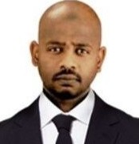

محمد عبدالباقي الريح
مهندس حاسوب وخبير تقنية معلومات في شركة الزقزوق للأجهزة المنزلية | إدارة الأنظمة | تطوير البنية التحتية الذكية | ماجستير في الأعمال الدولية | طالب دكتوراه في الأمن السيبراني بجامعة مينيسوتا.
الهدف الوظيفي
اختصاصي تقنية معلومات بخبرة واسعة في تركيب وصيانة الأنظمة والشبكات، ودعم فني احترافي وتدريب الموظفين وإدارة الأمان والتقنيات الحديثة.
المهارات الرئيسية
- الإدارة التقنية وحل المشكلات
- إدارة تقنية المعلومات
- تدريب وتعليم الموظفين
- خدمة العملاء والقيادة
- بناء العلاقات والانتباه للتفاصيل
الخبرات العملية
- اختصاصي تقنية معلومات - الزقزوق للأجهزة المنزلية، جدة (2017-الآن)
- محاضر تقنية معلومات - جامعة السودان للعلوم والتكنولوجيا (2016-2017)
- رئيس قسم البنية التحتية والدعم الفني - مدينة أفريقيا التكنولوجية (2014-2017)
- مهندس شبكات وحواسيب - مدينة أفريقيا التكنولوجية (2011-2014)
- مهندس شبكات وحواسيب - قرية الخرطوم للشحن الجوي (2008-2010)
المؤهلات التعليمية
- ماجستير في الأعمال الدولية - جامعة أميتي، الهند (2017)
- بكالوريوس تقنية المعلومات - جامعة أميتي، الهند (2013)
- دبلوم ثلاثة سنوات في هندسة الحاسب الآلي - جامعة بحري، السودان (2006)
الشهادات والاعتمادات
- دبلوم تصميم وصيانة الشبكات - سوداتل
- CCNA - أكاديمية سوداتل
- تدريب IPv6 - الهيئة القومية للاتصالات
- دبلوم صيانة الحاسب والشبكات
- إدارة أنظمة لينكس (ريد هات)
- دورة الإشراف الأكاديمي - الجامعة المفتوحة
المهارات التقنية
- الشبكات (TCP/IP, VPN, LAN/WAN)
- ويندوز، لينكس، macOS
- إدارة الأنظمة والأمن السيبراني
- الدعم الفني للأجهزة وخدمة العملاء
- الأنظمة الافتراضية (VMware, Hyper-V)